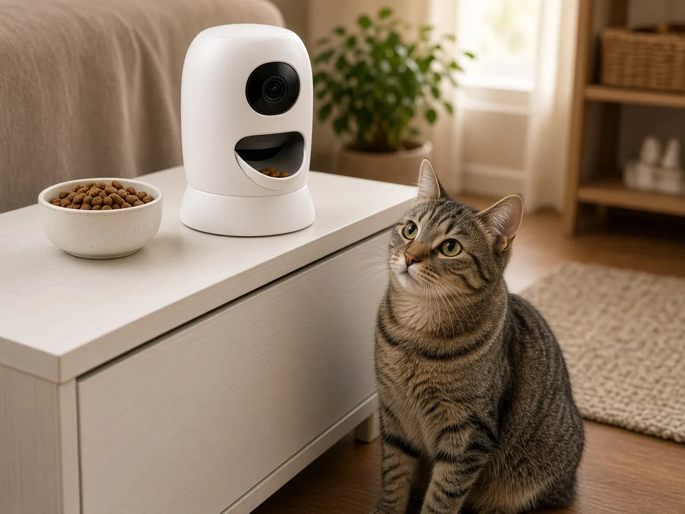

Caméra chat avec lanceur de friandises : Furbo, Petcube et les critères 2026

Voir son chat, lui parler et lui lancer une friandise depuis le bureau : c’est la promesse des caméras pour animaux avec lanceur de friandises, dont les plus connues sont Furbo et Petcube. Ce sont des caméras premium, plus chères qu’une caméra domestique classique, et souvent accompagnées d’un abonnement. Voici comment savoir si l’achat se justifie pour ton chat, et quoi vérifier avant de commander. Nous n’affichons pas de prix : ils évoluent souvent, vérifie-les sur la page du vendeur.
Caméra à friandises ou caméra classique ?
| Caméra à friandises (Furbo, Petcube…) | Caméra intérieure classique | |
|---|---|---|
| Interaction | Lancer de friandise, audio 2 voies | Audio 2 voies sur beaucoup de modèles |
| Alertes « animal » | Souvent, parfois sous abonnement | Variable selon la marque |
| Stockage vidéo | Surtout cloud, abonnement fréquent | Souvent microSD sans abonnement |
| Budget | Élevé (+ abonnement éventuel) | Plus modéré |
| Pour qui | Chat gourmand, longues journées, envie d’interagir | Juste vérifier que tout va bien |
Si tu veux seulement jeter un coup d’œil, notre guide caméra de surveillance pour chat d’appartement détaille les caméras motorisées avec microSD, sans abonnement.
Furbo : l’interaction avant tout
Furbo s’est fait connaître avec ses caméras pour chiens à lancer de friandises, et propose aussi une version pensée pour les chats. Le principe : un réservoir de petites friandises sèches, un bouton dans l’application pour en lancer une, une caméra grand angle ou rotative selon le modèle et l’audio bidirectionnel. Les alertes intelligentes et l’historique vidéo passent généralement par l’abonnement de la marque (Furbo Nanny). Vérifie sur la fiche ce qui reste utilisable sans abonnement : direct, lancer, audio.
Caméras Furbo
Pour : interaction ludique, application simple. Vérifie : version chat ou chien, taille de friandises acceptée, fonctions incluses sans abonnement.
Voir sur Amazon : FurboPetcube : une gamme plus large
Petcube propose plusieurs caméras, dont des modèles à friandises (gamme Bites) et des caméras simples. Comme chez Furbo, une partie des fonctions avancées (historique vidéo dans le cloud, alertes enrichies) dépend d’un abonnement (Petcube Care). Compare les modèles : rotation ou non, vision nocturne, stockage local possible ou non, taille du réservoir.
Caméras Petcube à friandises
Pour : choix de modèles, audio 2 voies. Vérifie : modèle à friandises (Bites) ou non, abonnement, emplacement microSD.
Voir sur Amazon : PetcubeLes critères qui comptent
- Lanceur adapté aux chats : taille et forme des friandises acceptées, distance de lancer, bruit du mécanisme (certains chats s’en effraient au début).
- Audio 2 voies : utile pour rassurer ou appeler, mais certains chats sont perturbés d’entendre ta voix sans te voir. Teste-le en ta présence.
- Abonnement cloud vs microSD : c’est le vrai coût caché. Un abonnement mensuel pèse sur la facture à 2 ou 3 ans. Une caméra avec microSD enregistre en local, sans abonnement : vérifie si le modèle visé l’accepte.
- Champ de vision : grand angle fixe dans un studio, rotation à 360° pour couvrir une pièce plus grande.
- Vision nocturne : indispensable pour regarder le soir ou en hiver.
- Wi-Fi 2,4 GHz : la plupart des caméras ne se connectent qu’à cette bande ; vérifie la portée dans la pièce visée.
- Stabilité : un chat curieux renverse ce qui est posé au bord. Place la caméra à plat, sur un meuble stable, câble protégé.
Vie privée en appartement
Une caméra intérieure filme aussi les humains. Préviens colocataires, pet-sitter ou aide-ménagère : filmer quelqu’un à son insu chez toi peut poser un problème juridique. Côté sécurité : mot de passe unique, double authentification du compte quand elle existe, mises à jour de l’application et du firmware. Préfère un modèle qui permet de désactiver la caméra ou de programmer des plages quand tu es à la maison. Avec le cloud, tes vidéos sont stockées chez le fabricant : lis sa politique de confidentialité. Avec la microSD, elles restent chez toi.
Friandises : la bonne dose
Le lancer de friandises est un jeu, pas un repas. Réserve quelques friandises sèches de petite taille, adaptées au lanceur, et retire-les de la ration quotidienne. Pour un chat en surpoids, utilise quelques croquettes de sa ration habituelle à la place.
Autres caméras chat avec friandises
D’autres marques proposent des caméras à friandises ou des distributeurs avec caméra : vérifie abonnement, microSD et avis sur la fiabilité du lanceur.
Voir sur Amazon : caméras à friandisesAlternative : distributeur de croquettes avec caméra
Un seul appareil pour nourrir aux heures fixes et voir le chat au moment du repas. Voir notre guide des distributeurs connectés.
Voir sur Amazon : distributeurs avec caméraNotre avis
Une caméra à friandises vaut le coup si ton chat est gourmand, si tu es absent de longues journées et si tu veux interagir plutôt que simplement regarder. Fais le calcul de l’abonnement sur 2 ou 3 ans et vérifie les fonctions disponibles sans lui. Si tu veux seulement vérifier que tout va bien, une caméra motorisée avec microSD suffit : vois notre guide caméra de surveillance. Pour savoir quoi acheter en priorité, commence par l’audit gratuit en 1 jour ou suis le plan en 7 jours.
Une caméra ne remplace ni ta présence ni un pet-sitter pour les absences de plus d’un week-end. Un chat qui mange moins, se cache ou change de comportement à l’écran doit être vu par un vétérinaire.
Liens affiliés Amazon : une commission peut être versée, sans surcoût pour toi.